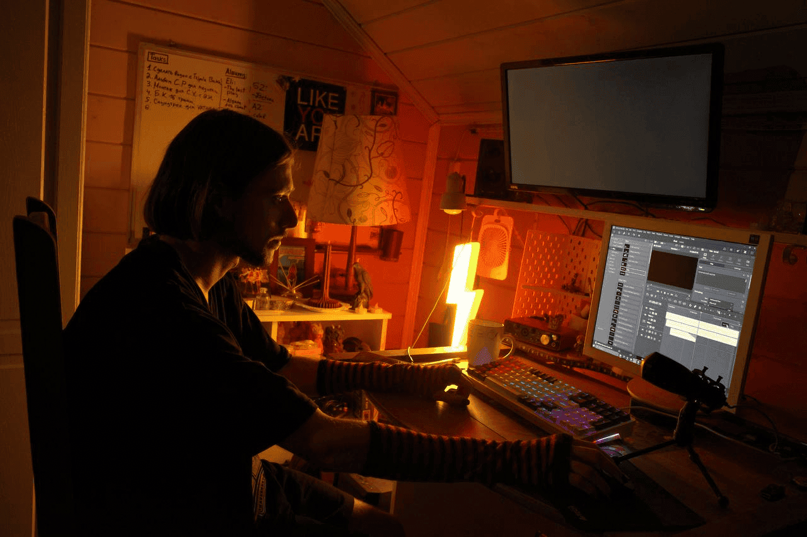

About
Ilya Minin (Eli)
Ilya Minin (Eli) is a digital and multimedia artist working across CGI and 3D, experimental animation, video art, sound art, electronic and experimental music, UTAU and vocal synthesis, interactive media, games, performance and audiovisual work.
The practice moves between constructed images, synthetic voices, digital environments, sound and physical experience. Digital tools are treated not only as production technologies, but also as material through which questions of identity, memory, mediation, embodiment, culture and the digital uncanny can be examined.
eli_lab brings together current work and an older body of experiments, collaborations and documentation. The archive therefore includes finished artworks alongside unfinished projects, technical experiments, performances, exhibitions and earlier material that helps trace the development of the practice.
Explore the artistic practice »
Read the extended biography and historical record »
Older works may appear under the historical ELIAS ADAMS identity. These records are retained as part of the archive and are not treated as a separate current artist identity.

Selected Works
Selected works from different periods of the archive. The complete project index contains additional animation, sound, interactive, game, collaboration and experimental material.
Explore the Archive
Projects
Browse the existing project taxonomy and its individual work records.
Practice
Graphics, painting, CGI, installations, photography, mixed techniques and experimental practice.
History & documentation
Biography, exhibitions, performances, live events and older archival material.